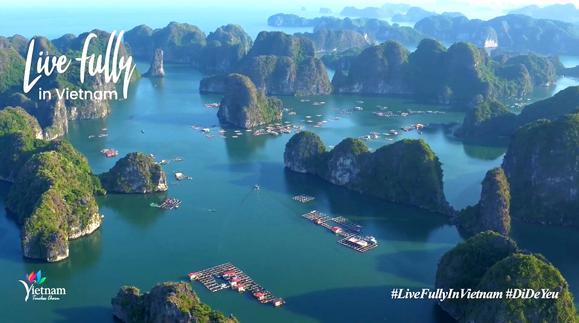

GIỚI THIỆU VỀ VỊNH HẠ LONG
vịnh hạ long Vịnh Hạ Long thuộc tỉnh Quảng Ninh, là một trong những danh lam thắng cảnh nổi tiếng của Việt Nam. Nơi đây gây ấn tượng với hàng nghìn hòn đảo đá vôi
làn nước xanh biếc và những hang động kỳ thú. Vịnh Hạ Long là Di sản thiên nhiên thế giới được UNESCO công nhận lần đầu vào năm 1994 nhờ giá trị cảnh quan thiên nhiên độc đáo.
Đến năm 2000, vịnh tiếp tục được công nhận về giá trị địa chất, địa mạo Vịnh Hạ Long là điểm đến du lịch hấp dẫn thu hút đông đảo du khách trong và ngoài nước.
CÁC HOẠT ĐỘNG NỔI BẬT
- Tham quan vịnh bằng du thuyền: Ngắm nhìn hàng nghìn hòn đảo đá vôi tuyệt đẹp.
- Khám phá hang động: Tham quan hang Sửng Sốt, hang Đầu Gỗ với những khối thạch nhũ kỳ thú.
- Chèo thuyền kayak: Khám phá các hang nhỏ, núi đá và làn nước xanh biếc.
- Tắm biển: Vui chơi, thư giãn tại bãi biển đảo Titop.
- Leo núi, ngắm cảnh: Chinh phục đỉnh đảo Titop để ngắm toàn cảnh vịnh.
